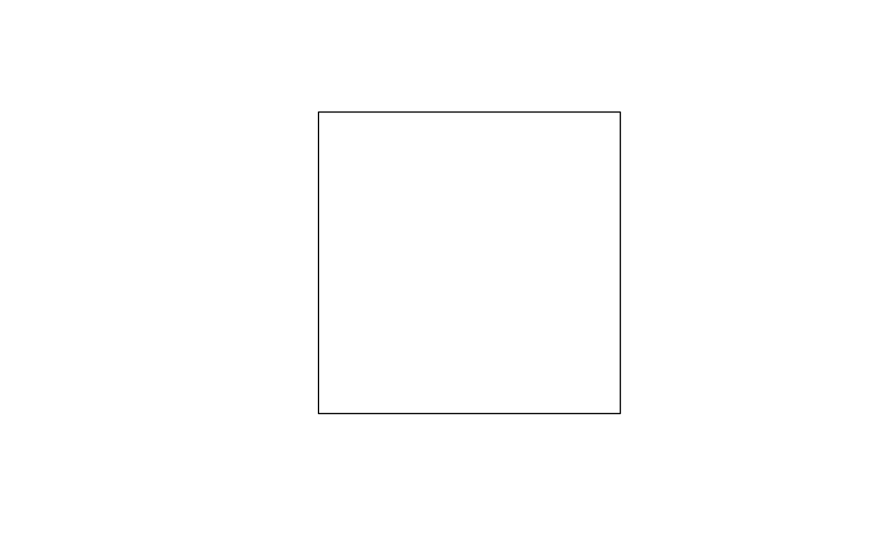

Read a .poly file.
Arguments
- input
Character vector representing a polygon object saved using the
.polyformat. Can be also a path to a file or a URL pointing to a valid.polyfile.- crs
The Coordinate Reference System (CRS) of the input polygon.
- ...
Further arguments passed to
readLines()(which is the function used to read external.polyfiles).
Details
The Polygon Filter File Format (.poly) is defined
here.
The code behind the function was inspired by the parse_poly function
defined
here.
Geofabrik stores the .poly files used
to generate their extracts. Furthermore, a nice collection of exact-border
poly files created from cities with an OSM Relation ID is available in this
git repository on github: https://github.com/jameschevalier/cities.
The default value for the crs argument is "OGC:CRS84" instead of "4326"
or "EPSG:4326" since, by definition, the coordinates are provided as
"longitude, latitude" (but these differences should be relevant only when
sf::st_axis_order() is TRUE).
Examples
toy_poly <- c(
"test_poly",
"first_area",
"0 0",
"0 1",
"1 1",
"1 0",
"0 0",
"END",
"END"
)
(out <- read_poly(toy_poly))
#> Geometry set for 1 feature
#> Geometry type: MULTIPOLYGON
#> Dimension: XY
#> Bounding box: xmin: 0 ymin: 0 xmax: 1 ymax: 1
#> Geodetic CRS: WGS 84 (CRS84)
#> MULTIPOLYGON (((0 0, 0 1, 1 1, 1 0, 0 0)))
plot(out)

if (FALSE) { # \dontrun{
italy_poly <- "https://download.geofabrik.de/europe/italy.poly"
plot(read_poly(italy_poly))} # }